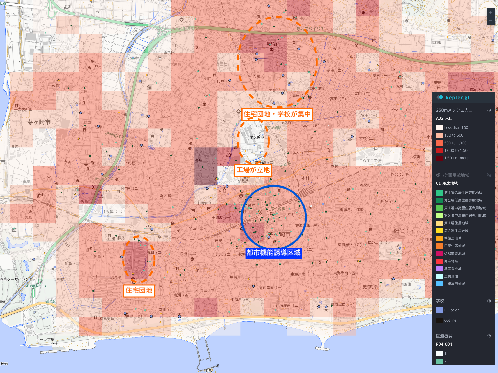
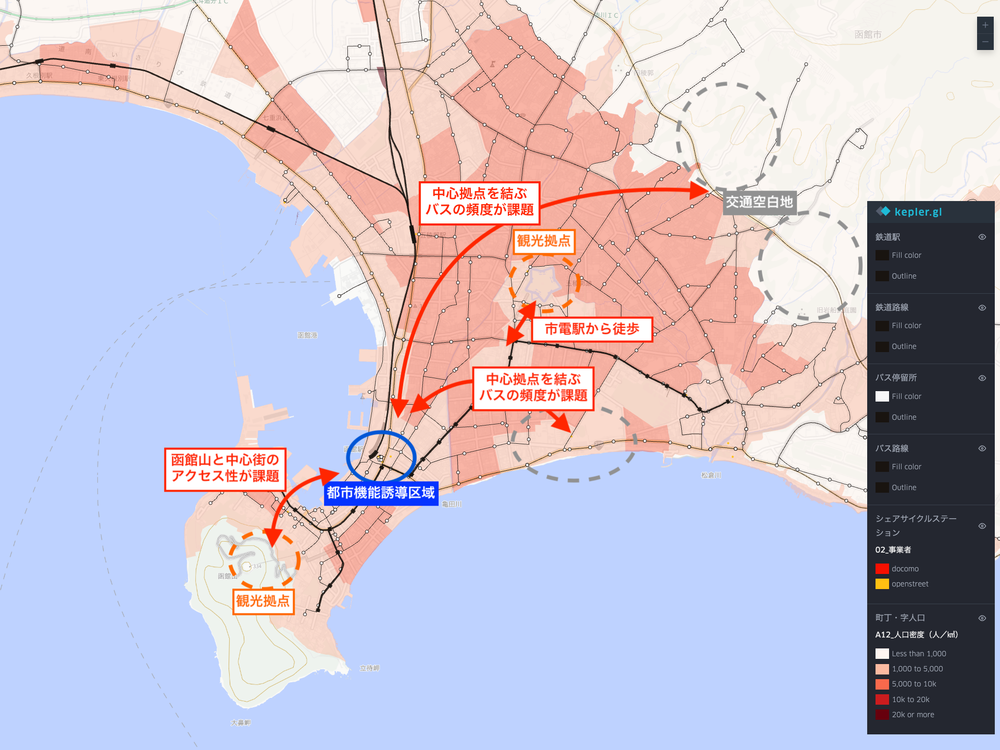
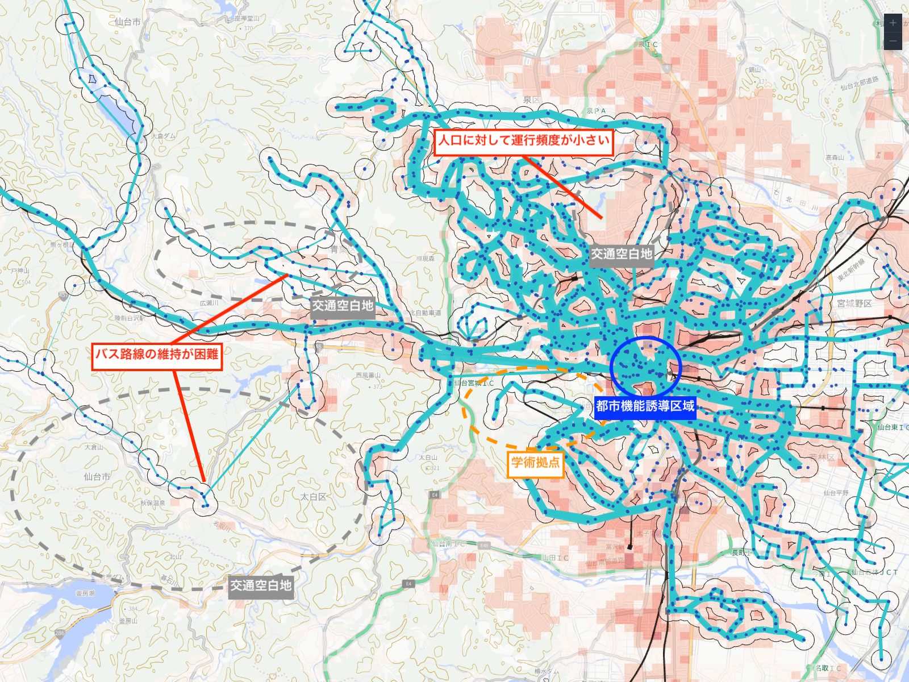
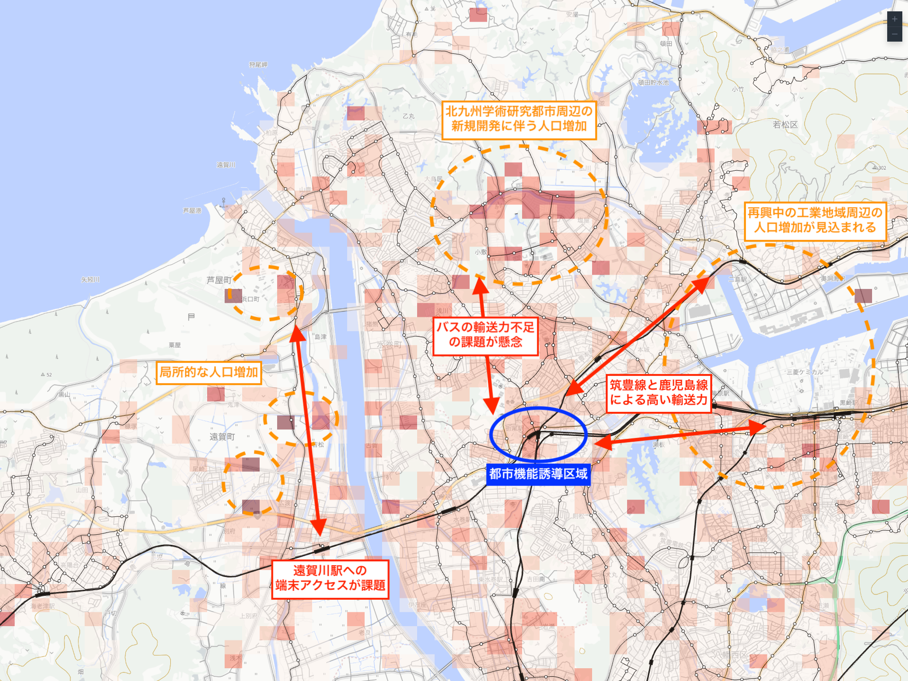

地域公共交通アップデートの実践
「地域公共交通計画の『アップデートガイダンス Ver1.0』」とは？
地域公共交通計画は、地域交通の目指す姿とその実現に向けた道筋を示す指針であり、まちづくり・福祉・教育・観光など他分野との連携のもと、関係者が共通認識を持ち協働を促す「司令塔」としての役割を担う。
「アップデートガイダンス Ver1.0」は、地域公共交通計画の作成・改訂にあたり、人口分布や交通ネットワークなどのモビリティデータを活用した現状診断やKPI・目標値の設定といった新しいアプローチを取り入れた計画作成の手順と、データの取得・活用方法をまとめたものである。
詳しくは地域交通のためのポータルサイト「MOBILITY UPDATE PORTAL」を参照。
本ページでは、アップデートガイダンスの概要版で示されたデータ活用の手順に沿って、Kepler.glで利用可能なベクタータイルやオープンデータを用いた可視化の方法を紹介する。
作成手順
- 各ユースケースごとのスターターマップのURLをコピー
- kepler.glを開く
Add Data>Load Map using URLで、コピーしたURLをペースト
1. 「人口情報」と「地域特性情報」を重ね合わせましょう（概要版 P4）
重ね合わせのイメージ (例: 神奈川茅ヶ崎市)

スターターマップのURL
https://raw.githubusercontent.com/amane-ltd/keplergl-resources/refs/heads/main/samplemaps/demomap01.json
活用データの一覧
| データ内容 | 取得先 |
|---|---|
| 総人口(A02_人口) | メッシュ人口 |
| 医療機関 | 国土数値情報 福祉施設データ |
| 学校 | 国土数値情報 学校データ |
| 市町村役場 | 国土数値情報 市町村役場等及び公的集会施設データ |
2. 「交通ネットワーク情報」を重ね合わせましょう（概要版 P5）
重ね合わせのイメージ (例: 北海道函館市)

スターターマップのURL
https://raw.githubusercontent.com/amane-ltd/keplergl-resources/refs/heads/main/samplemaps/demomap02.json
活用データの一覧
| データ内容 | 取得先 |
|---|---|
| 鉄道駅 | 鉄道駅 |
| 鉄道路線 | 鉄道路線 |
| バス停留所 | バス停留所 |
| バス路線 | バス路線 |
| シェアサイクルステーション（ステーション名・収容台数） | シェアサイクルステーション |
| 町丁目人口(A09_人口) | 町丁目人口 |
3. 「交通サービスの利用情報」を重ね合わせましょう（概要版 P6）
重ね合わせのイメージ(例: 宮城県仙台市)

スターターマップのURL
https://raw.githubusercontent.com/amane-ltd/keplergl-resources/refs/heads/main/samplemaps/demomap03.json
活用データの一覧
| データ内容 | 取得先 |
|---|---|
| 鉄道駅 | 鉄道駅 |
| 鉄道路線 | 鉄道路線 |
| バスの停留所 | 仙台市交通局GTFSからGTFS-Cookerを用いて出力 |
| バスの路線別便数 | 仙台市交通局GTFSからGTFS-Cookerを用いて出力 |
| バス停留所の300m圏 | 仙台市交通局GTFSからGTFS-Cookerを用いて出力 |
| 総人口(A02_人口) | メッシュ人口 |
4. 「潜在需要」を重ね合わせしましょう（概要版 P7）
重ね合わせのイメージ (例: 福岡県北九州市)

スターターマップのURL
https://raw.githubusercontent.com/amane-ltd/keplergl-resources/refs/heads/main/samplemaps/demomap04.json
活用データの一覧
| データ内容 | 取得先 |
|---|---|
| 転居人口割合（F08_移動あり総数の割合（%）） | 250m人口メッシュ |
| 鉄道駅 | 鉄道駅 |
| 鉄道路線 | 鉄道路線 |
| バス停留所 | バス停留所 |
| バス路線 | バス路線 |